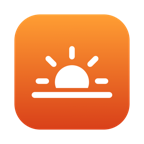

Nocne myśli
Jest 23:40, a ekran wciąż świeci jak w samo południe. Każda biała strona to mały wschód słońca.
NiebieskiZielonyCzerwony
Bloker światła niebieskiego dla macOS
Night Shift to łagodny filtr światła niebieskiego: tylko je ogranicza. Dozelight blokuje je całkowicie, aż do blasku świecy i czystej czerwieni, a do tego podąża za twoją porą snu, więc ekran wycisza się razem z tobą.
14-dniowy okres próbny ze wszystkimi funkcjami · macOS 13 lub nowszy · Apple silicon i Intel
Wypróbuj
To symulacja w twojej przeglądarce. Prawdziwa aplikacja ociepla cały ekran – i Touch Bar też.
Jest 23:40, a ekran wciąż świeci jak w samo południe. Każda biała strona to mały wschód słońca.
Co potrafi
Auto ociepla ekran krok po kroku przez cały wieczór, po porze snu przechodzi w czerwień, a zanim się obudzisz, wraca do zwykłych barw. Może podążać za twoją porą snu albo za zmierzchem i świtem.
Maksymalne ocieplenie decyduje, jak daleko to zajdzie: łagodny bursztyn, blask świecy albo pełna czerwień. Przypomnienie 30 minut przed snem włączysz jednym kliknięciem.
Suwak zaczyna się na 2700K, tam gdzie kończy się Night Shift, i schodzi aż do 1000K. Potem jest jeszcze jeden stopień: Tylko czerwień całkowicie usuwa niebieski i zielony, zostawiając najłagodniejsze światło, jakie potrafi dać ekran. Touch Bar dostaje tę samą barwę.
Dodatkowe przyciemnienie przygasza czerwień jeszcze bardziej – poniżej najniższego ustawienia jasności.
Kiedy potrzebujesz prawdziwych kolorów, wstrzymaj ocieplenie na godzinę albo do rana. Możesz też wybrać aplikacje – na przykład edytor zdjęć – w których barwa znika, gdy z nich korzystasz, i wraca, gdy je opuszczasz.
Każda zmiana w menu kończy wstrzymanie.
Funkcje
Night Shift kończy się na 2700K. Dozelight idzie dalej, aż do 1000K, z gotowymi ustawieniami od Ciepła po Żar.
Całkowicie usuwa niebieski i zielony – to jeszcze jeden stopień za 1000K, jak widać wyżej.
Auto stopniowo ociepla ekran przez cały wieczór, a po porze snu przechodzi w czerwień, jak widać wyżej.
Night Shift pomija Touch Bar. Dozelight ociepla go tak samo jak ekran albo daje mu osobny suwak.
W głębokiej czerwieni strzałka łatwo ginie. Włącz większy wskaźnik z delikatną poświatą i wyłącz podświetlenie klawiatury – tylko wtedy, gdy ekran jest najcieplejszy.
Dzisiejszy zmierzch i świt prosto w menu, wyliczone na podstawie twojej strefy czasowej. Bez dostępu do lokalizacji – nigdy.
Czerń i biel, Sepia, Odwróć kolory i Ciemnia, a do tego Wysoki kontrast i Dodatkowe przyciemnienie, gdy chcesz ciemniej niż przy najniższej jasności.
Reaguje na Night Shift, twoje ustawienia i monitory w ułamku sekundy. Bez ciągłego odpytywania, bez opóźnień.
Tylko 1,6 MB do pobrania, niemierzalne zużycie CPU w spoczynku i zero śledzenia. Łączy się z internetem tylko po to, by sprawdzić licencję i poszukać aktualizacji.
Auto może podążać za zmierzchem i świtem zamiast za twoją porą snu. Wieczór ociepla się od zmierzchu, pogłębia po porze snu i ustępuje do świtu.
Maksymalne ocieplenie ustala, jak daleko idzie Auto: łagodny bursztyn dla jednych, blask świecy dla większości, czysta czerwień dla nocnych marków.
Na godzinę albo do rana, jak widać wyżej; każda zmiana od razu przywraca ocieplenie.
Wybierz aplikacje, na przykład edytor zdjęć, w których ocieplenie znika, gdy z nich korzystasz, i wraca, gdy je opuszczasz.
Masz więcej niż jeden ekran? Wybierz, które mają być ocieplane. Monitor do pracy z kolorem może pozostać neutralny.
⌃⌥⌘D włącza i wyłącza ocieplenie, ⌃⌥⌘→ i ← zmieniają ciepło o stopień, a przewijanie nad ikoną na pasku menu pozwala je precyzyjnie dostroić.
dozelight://warmer, pause, off i inne linki pozwalają sterować Dozelight z aplikacji Skróty, ze skryptów albo z automatyzacji inteligentnego domu.
Twoja noc
To światło niebieskie mówi organizmowi, że wciąż jest dzień. W trybie Auto Dozelight ogranicza je krok po kroku, im bliżej pory snu, a przez noc zostawia tylko czerwone światło – więc nawet rzut oka na ekran o 3:00 w nocy pozostaje łagodny.
Porę snu i porę pobudki ustawisz w menu.
Porównanie
| Night Shift | Dozelight | |
|---|---|---|
| Najcieplejsze ustawienie | 2700K | 1000K |
| Całkowicie blokuje światło niebieskie | Nie, tylko je ogranicza | Tak, od 1900K |
| Tylko czerwień, bez niebieskiego i zielonego | Nie | Tak |
| Stopniowy harmonogram do pory snu | Tylko od zachodu do wschodu słońca | Tak |
| Touch Bar | Zostaje biały | Ociepla się razem z ekranem |
| Pomoc ze wskaźnikiem po ciemku | Nie | Większy wskaźnik i poświata |
Zobacz, jak Dozelight wypada na tle f.lux i Światła nocnego → · Jak sprawić, by Night Shift był cieplejszy →

Cena we wczesnym dostępie
ok. 39 złjednorazowo
Cena we wczesnym dostępie. Po zakończeniu wczesnego dostępu wzrośnie do ok. 58 zł. Pierwsi kupujący współtworzą Dozelight: napisz nam, co chcesz zobaczyć w kolejnych wersjach.
Wersja 1.5.14 · 1,6 MB · macOS 13 Ventura lub nowszy. Płatność w dolarach (9,99 USD), kwotę w złotych przelicza twój bank. Płatności bezpiecznie obsługuje Polar. Co nowego →
Instalacja
Dozelight jest poświadczony przez Apple, więc otwiera się jak każda inna pobrana aplikacja. Zobacz instrukcję instalacji krok po kroku, z ilustracjami →
Dozelight.dmg z folderu Pobrane.Zostaw swój e-mail, a dostaniesz krótką wiadomość, gdy w Dozelight pojawi się coś nowego.
Pytania i odpowiedzi
iPhone i iPad nie pozwalają aplikacjom ocieplać całego ekranu, więc Dozelight na nie nie istnieje. Mają jednak wbudowane ustawienia, które dają podobny efekt: zajrzyj do naszego bezpłatnego poradnika o czerwonym ekranie nocą na iPhonie i iPadzie.
Na każdym Macu z macOS 13 Ventura lub nowszym, z procesorem Apple silicon lub Intel. Ocieplanie Touch Bara działa na MacBookach Pro z Apple silicon i Touch Barem.
Nie potrzebuje go. Dozelight ociepla ekran o każdej porze dnia, niezależnie od tego, czy Night Shift jest włączony. Jeśli jest, Dozelight dokłada się do jego ocieplenia, tak aby ekran miał dokładnie wybraną przez ciebie temperaturę. W trybie Auto podąża za twoją własną porą snu.
Ciemnia odwraca kolory ekranu i zostawia tylko czerwień, więc strony stają się czarne z czerwonym tekstem: to najłagodniejszy sposób na czytanie późną nocą. Dodatkowe przyciemnienie sprawia, że ekran jest ciemniejszy niż przy najniższym ustawieniu jasności. Obie opcje znajdziesz w menu Filtry, obok filtrów Czerń i biel, Sepia, Odwróć kolory i Wysoki kontrast. Działają o każdej porze dnia.
Nie. Dozelight pracuje tylko wtedy, gdy coś się zmienia, na przykład gdy włącza się Night Shift albo przesuwasz suwak. W spoczynku jego zużycie CPU jest niemierzalne.
Nie. Ocieplenie nakłada sam wyświetlacz, więc zrzuty ekranu, nagrania i udostępniany ekran zachowują prawdziwe kolory.
Nie. Dozelight nie ma żadnej analityki ani śledzenia. Łączy się z internetem tylko po to, by aktywować i od czasu do czasu sprawdzić twój klucz licencyjny – wysyła wtedy wyłącznie klucz i nazwę twojego Maca – oraz raz dziennie, by poszukać aktualizacji. Zmierzch i świt są szacowane na podstawie twojej strefy czasowej, więc nie potrzebuje też twojej lokalizacji.
Jedno i drugie. Filtr światła niebieskiego, taki jak Night Shift, ogranicza światło niebieskie. Dozelight robi to przy łagodniejszych ustawieniach, a jako bloker światła niebieskiego całkowicie wyłącza niebieskie światło ekranu: przy 1900K i cieplejszych ustawieniach oraz w trybie Tylko czerwień. Ty decydujesz, jak daleko pójść – albo zdajesz się na tryb Auto, który podąża za twoją porą snu.
Tak. Przy 1900K i cieplejszych ustawieniach oraz w trybie Tylko czerwień Dozelight całkowicie wyłącza niebieskie światło ekranu. Łagodniejsze ustawienia je ograniczają, jak mocniejszy Night Shift. Tryb Auto dochodzi do 1900K w twojej porze snu i przez całą noc zostawia tylko czerwone światło.
Usuwa jedną z rzeczy, które mogą opóźniać sen: jasne, bogate w niebieską barwę światło ekranu wieczorem. Tryb Auto stopniowo ociepla ekran, a po porze snu zostawia tylko czerwone światło. Regularne pory snu, wyciszenie się wieczorem i ciemna sypialnia znaczą co najmniej tyle samo, więc zajrzyj do naszego poradnika o ekranach, świetle niebieskim i lepszym śnie. Dozelight to narzędzie poprawiające komfort, a nie wyrób medyczny.
Nie. Dozelight to narzędzie, które poprawia komfort korzystania z Maca wieczorem. Nie diagnozuje, nie leczy ani nie zapobiega żadnym schorzeniom.
ok. 39 zł, jednorazowo. To cena we wczesnym dostępie – po jego zakończeniu wzrośnie do ok. 58 zł. Najpierw możesz przez 14 dni bezpłatnie wypróbować wszystkie funkcje, a jedna licencja obejmuje maksymalnie 3 komputery – Mac lub Windows.
Dozelight jest kompletny i gotowy do codziennego użytku, a nowe funkcje są w drodze. We wczesnym dostępie kosztuje mniej, a jego użytkownicy pomagają zdecydować, co pojawi się dalej. Twoja licencja działa także po zakończeniu wczesnego dostępu, a aktualizacje nadal przychodzą automatycznie.
Ocieplenie zostanie wstrzymane, dopóki nie wpiszesz klucza licencyjnego. Twoje ustawienia pozostaną bez zmian, więc wszystko wróci w chwili aktywacji.
Dozelight raz dziennie sprawdza, czy jest nowa wersja. Jeśli jest, pokazuje, co nowego, i instaluje ją jednym kliknięciem. W każdej chwili możesz też wybrać w jego menu Ustawienia → Sprawdź uaktualnienia…
Na starym Macu otwórz Licencja… w menu Dozelight i kliknij Dezaktywuj ten Mac. Swoimi Macami możesz też zarządzać w portalu klienta Polar – link znajdziesz w potwierdzeniu zakupu.
Tak. Jeśli Dozelight ci nie odpowiada, napisz do nas w ciągu 14 dni od zakupu, a zwrócimy całą kwotę. Zobacz zasady zwrotów.
Tak. Dozelight jest podpisany przez swojego twórcę i poświadczony przez Apple, które przed udostępnieniem do pobrania sprawdza każdą wersję pod kątem złośliwego oprogramowania. Przy pierwszym otwarciu macOS zapyta, czy otworzyć aplikację pobraną z internetu: kliknij Otwórz. Zobacz kroki instalacji powyżej.